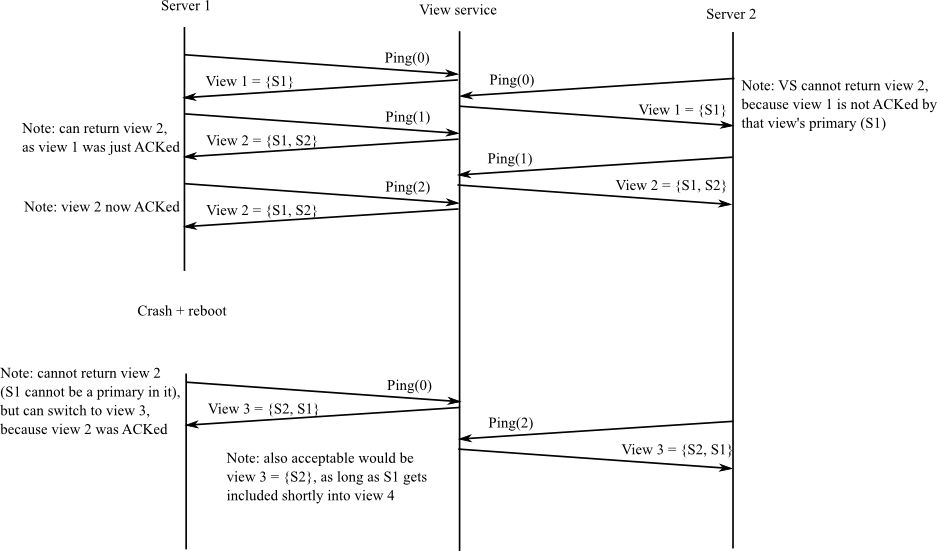

In the MapReduce lab handling failures was relatively easy because the workers did not maintain state. The master did maintain state, but you didn't have to make it fault-tolerant. Lab 2 is a first step towards fault tolerance for servers with state.
In the next 4 labs you will build several key/value services. The services support three RPCs: Put(key, value), Append(key, arg), and Get(key). The service maintains a simple database of key/value pairs. Put() replaces the value for a particular key in the database. Append(key, arg) appends arg to key's value. Get() fetches the current value for a key.
The labs differ in the degree of fault tolerance and performance they provide for the key/value service:
In each lab you will have to do substantial design. We give you a sketch of the overall design (and code for the boring pieces), but you will have to flesh it out and nail down a complete protocol. The tests explore your protocol's handling of failure scenarios as well as general correctness and basic performance. You may need to re-design (and thus re-implement) in light of problems exposed by the tests; careful thought and planning may help you avoid too many re-design cycles. We don't give you a description of the test cases (other than the Go code); in the real world, you would have to come up with them yourself.
In this lab you'll make a key/value service fault-tolerant using a form of primary/backup replication. In order to ensure that all parties (clients and servers) agree on which server is the primary, and which is the backup, we'll introduce a kind of master server, called the viewservice. The viewservice monitors whether each available server is alive or dead. If the current primary or backup becomes dead, the viewservice selects a server to replace it. A client checks with the viewservice to find the current primary. The servers cooperate with the viewservice to ensure that at most one primary is active at a time.
Your key/value service will allow replacement of failed servers. If the primary fails, the viewservice will promote the backup to be primary. If the backup fails, or is promoted, and there is an idle server available, the viewservice will cause it to be the backup. The primary will send its complete database to the new backup, and then send subsequent Puts to the backup to ensure that the backup's key/value database remains identical to the primary's.
It turns out the primary must send Gets as well as Puts to the backup (if there is one), and must wait for the backup to reply before responding to the client. This helps prevent two servers from acting as primary (a "split brain"). An example: S1 is the primary and S2 is the backup. The view service decides (incorrectly) that S1 is dead, and promotes S2 to be primary. If a client thinks S1 is still the primary and sends it an operation, S1 will forward the operation to S2, and S2 will reply with an error indicating that it is no longer the backup (assuming S2 obtained the new view from the viewservice). S1 can then return an error to the client indicating that S1 might no longer be the primary (reasoning that, since S2 rejected the operation, a new view must have been formed); the client can then ask the view service for the correct primary (S2) and send it the operation.
A failed key/value server may restart, but it will do so without a copy of the replicated data (i.e. the keys and values). That is, your key/value server will keep the data in memory, not on disk. One consequence of keeping data only in memory is that if there's no backup, and the primary fails, and then restarts, it cannot then act as primary.
Only RPC may be used for interaction between clients and servers, between different servers, and between different clients. For example, different instances of your server are not allowed to share Go variables or files.
The design outlined here has some fault-tolerance and performance limitations which make it too weak for real-world use:
We will address these limitations in later labs by using better designs and protocols. This lab will help you understand the problems that you'll solve in the succeeding labs.
The primary/backup scheme in this lab is not based on any published protocol. In fact, this lab doesn't specify a complete protocol; you must work out the details. The protocol has similarities with Flat Datacenter Storage (the viewservice is like FDS's metadata server, and the primary/backup servers are like FDS's tractservers), though FDS pays far more attention to performance. It's also a bit like a MongoDB replica set (though MongoDB selects the leader with a Paxos-like election). For a detailed description of a (different) primary-backup-like protocol, see Chain Replication. Chain Replication has higher performance than this lab's design, though it assumes that the view service never declares a server dead when it is merely partitioned. See Harp and Viewstamped Replication for a detailed treatment of high-performance primary/backup and reconstruction of system state after various kinds of failures.
Do a git pull to get the latest lab software. We supply you with Lab 2 skeleton code and tests in src/viewservice and src/pbservice.
$ add 6.824
$ cd ~/6.824
$ git pull
...
$ cd src/viewservice
$ go test
2012/12/28 14:51:47 method Kill has wrong number of ins: 1
First primary: --- FAIL: Test1 (1.02 seconds)
test_test.go:13: wanted primary /var/tmp/viewserver-35913-1, got
FAIL
exit status 1
FAIL _/afs/athena.mit.edu/user/r/t/rtm/6.824/src/viewservice 1.041s
$
Ignore the method Kill error message now and in the future.
The tests fail because viewservice/server.go has empty
RPC handlers.
You can run your code as stand-alone programs using the source in main/viewd.go, main/pbd.go, and main/pbc.go. See the comments in pbc.go.
First you'll implement a viewservice and make sure it passes our tests; in Part B you'll build the key/value service. Your viewservice won't itself be replicated, so it will be relatively straightforward. Part B is much harder than part A, because the K/V service is replicated and you have to design much of the replication protocol.
The view service goes through a sequence of numbered views, each with a primary and (if possible) a backup. A view consists of a view number and the identity (network port name) of the view's primary and backup servers.
The primary in a view must always be either the primary or the backup of the previous view. This helps ensure that the key/value service's state is preserved. An exception: when the viewservice first starts, it should accept any server at all as the first primary. The backup in a view can be any server (other than the primary), or can be altogether missing if no server is available (represented by an empty string, "").
Each key/value server should send a Ping RPC once per PingInterval (see viewservice/common.go). The view service replies to the Ping with a description of the current view. A Ping lets the view service know that the key/value server is alive; informs the key/value server of the current view; and informs the view service of the most recent view that the key/value server knows about. If the viewservice doesn't receive a Ping from a server for DeadPings PingIntervals, the viewservice should consider the server to be dead. When a server re-starts after a crash, it should send one or more Pings with an argument of zero to inform the view service that it crashed.
The view service proceeds to a new view if it hasn't received recent Pings from both primary and backup, or if the primary or backup crashed and restarted, or if there is no backup and there is an idle server (a server that's been Pinging but is neither the primary nor the backup). But the view service must not change views (i.e., return a different view to callers) until the primary from the current view acknowledges that it is operating in the current view (by sending a Ping with the current view number). If the view service has not yet received an acknowledgment for the current view from the primary of the current view, the view service should not change views even if it thinks that the primary or backup has died. That is, the view service may not proceed from view X to view X+1 if it has not received a Ping(X) from the primary of view X.
The acknowledgment rule prevents the view service from getting more than one view ahead of the key/value servers. If the view service could get arbitrarily far ahead, then it would need a more complex design in which it kept a history of views, allowed key/value servers to ask about old views, and garbage-collected information about old views when appropriate. The downside of the acknowledgement rule is that if the primary fails before it acknowledges the view in which it is primary, then the view service cannot ever change views again.
An example sequence of view changes:

The above example is overspecified; for example, when the view server gets Ping(1) from S1 for the first time, it is also OK for it to return view 1, as long as it eventually switches to view 2 (which includes S2).We provide you with a complete client.go and appropriate RPC definitions in common.go. Your job is to supply the needed code in server.go. When you're done, you should pass all the viewservice tests:
$ cd ~/6.824/src/viewservice $ go test Test: First primary ... ... Passed Test: First backup ... ... Passed Test: Backup takes over if primary fails ... ... Passed Test: Restarted server becomes backup ... ... Passed Test: Idle third server becomes backup if primary fails ... ... Passed Test: Restarted primary treated as dead ... ... Passed Test: Viewserver waits for primary to ack view ... ... Passed Test: Uninitialized server can't become primary ... ... Passed PASS ok viewservice 7.457s $
The above output omits some benign Go rpc errors.
Hint: you'll want to add field(s) to ViewServer in server.go in order to keep track of the most recent time at which the viewservice has heard a Ping from each server. Perhaps a map from server names to time.Time. You can find the current time with time.Now().
Hint: add field(s) to ViewServer to keep track of the current view.
Hint: you'll need to keep track of whether the primary for the current view has acknowledged it (in PingArgs.Viewnum).
Hint: your viewservice needs to make periodic decisions, for example to promote the backup if the viewservice has missed DeadPings pings from the primary. Add this code to the tick() function, which is called once per PingInterval.
Hint: there may be more than two servers sending Pings. The extra ones (beyond primary and backup) are volunteering to be backup if needed.
Hint: the viewservice needs a way to detect that a primary or backup has failed and re-started. For example, the primary may crash and quickly restart without missing sending a single Ping.
Hint: study the test cases before you start programming. If you fail a test, you may have to look at the test code in test_test.go to figure out the failure scenario is.
The easiest way to track down bugs is to insert log.Printf() statements, collect the output in a file with go test > out, and then think about whether the output matches your understanding of how your code should behave.
Remember that the Go RPC server framework starts a new thread for each received RPC request. Thus if multiple RPCs arrive at the same time (from multiple clients), there may be multiple threads running concurrently in the server.
The tests kill a server by setting its dead flag. You must make sure that your server terminates when that flag is set (test it with isdead()), otherwise you may fail to complete the test cases.
The primary/backup key/value server source is in pbservice. We supply you with part of a client interface in pbservice/client.go, and part of the server in pbservice/server.go. Clients use the service by creating a Clerk object (see client.go) and calling its methods, which send RPCs to the service.
Your key/value service should continue operating correctly as long as there has never been a time at which no server was alive. It should also operate correctly with partitions: a server that suffers temporary network failure without crashing, or can talk to some computers but not others. If your service is operating with just one server, it should be able to incorporate a recovered or idle server (as backup), so that it can then tolerate another server failure.
Correct operation means that calls to Clerk.Get(k) return the latest value set by a successful call to Clerk.Put(k,v) or Clerk.Append(k,v), or an empty string if the key has never seen either. All operations should provide at-most-once semantics (see lectures 2 and 3).
You should assume that the viewservice never halts or crashes.
Your clients and servers may only communicate using RPC, and both clients and servers must send RPCs with the call() function in client.go.
It's crucial that only one primary be active at any given time. You should have a clear story worked out for why that's the case for your design. A danger: suppose in some view S1 is the primary; the viewservice changes views so that S2 is the primary; but S1 hasn't yet heard about the new view and thinks it is still primary. Then some clients might talk to S1, and others talk to S2, and not see each others' Put()s.
A server that isn't the active primary should either not respond to clients, or respond with an error: it should set GetReply.Err or PutReply.Err to something other than OK.
Clerk.Get(), Clerk.Put(), and Clerk.Append() should only return when they have completed the operation. That is, Put()/Append() should keep trying until they have updated the key/value database, and Clerk.Get() should keep trying until it has retrieved the current value for the key (if any). Your server must filter out the duplicate RPCs that these client re-tries will generate to ensure at-most-once semantics for operations. You can assume that each clerk has only one outstanding Put or Get. Think carefully about what the commit point is for a Put.
A server should not talk to the viewservice for every Put/Get it receives, since that would put the viewservice on the critical path for performance and fault-tolerance. Instead servers should Ping the viewservice periodically (in pbservice/server.go's tick()) to learn about new views. Similarly, the client Clerk should not talk to the viewservice for every RPC it sends; instead, the Clerk should cache the current primary, and only talk to the viewservice when the current primary seems to be dead.
Part of your one-primary-at-a-time strategy should rely on the viewservice only promoting the backup from view i to be primary in view i+1. If the old primary from view i tries to handle a client request, it will forward it to its backup. If that backup hasn't heard about view i+1, then it's not acting as primary yet, so no harm done. If the backup has heard about view i+1 and is acting as primary, it knows enough to reject the old primary's forwarded client requests.
You'll need to ensure that the backup sees every update to the key/value database, by a combination of the primary initializing it with the complete key/value database and forwarding subsequent client operations. Your primary should forward just the arguments to each Append() to the backup; do not forward the resulting value, which might be large.
The skeleton code for the key/value servers is in src/pbservice. It uses your viewservice, so you'll have to set up your GOPATH as follows:
$ export GOPATH=$HOME/6.824
$ cd ~/6.824/src/pbservice
$ go test -i
$ go test
Single primary, no backup: --- FAIL: TestBasicFail (2.00 seconds)
test_test.go:50: first primary never formed view
--- FAIL: TestFailPut (5.55 seconds)
test_test.go:165: wrong primary or backup
Concurrent Put()s to the same key: --- FAIL: TestConcurrentSame (8.51 seconds)
...
Partition an old primary: --- FAIL: TestPartition (3.52 seconds)
test_test.go:354: wrong primary or backup
...
$
Here's a recommended plan of attack:
You're done if you can pass all the pbservice tests:
$ cd ~/6.824/src/pbservice $ go test Test: Single primary, no backup ... ... Passed Test: Add a backup ... ... Passed Test: Primary failure ... ... Passed Test: Kill last server, new one should not be active ... ... Passed Test: at-most-once Put; unreliable ... ... Passed Test: Put() immediately after backup failure ... ... Passed Test: Put() immediately after primary failure ... ... Passed Test: Concurrent Put()s to the same key ... ... Passed Test: Concurrent Put()s to the same key; unreliable ... ... Passed Test: Repeated failures/restarts ... ... Put/Gets done ... ... Passed Test: Repeated failures/restarts; unreliable ... ... Put/Gets done ... ... Passed Test: Old primary does not serve Gets ... ... Passed Test: Partitioned old primary does not complete Gets ... ... Passed PASS ok pbservice 113.352s $
You'll see some "method Kill has wrong number of ins" complaints and lots of "rpc: client protocol error" and "rpc: writing response" complaints; ignore them.
Hint: you'll probably need to create new RPCs to forward client requests from primary to backup, since the backup should reject a direct client request but should accept a forwarded request.
Hint: you'll probably need to create new RPCs to handle the transfer of the complete key/value database from the primary to a new backup. You can send the whole database in one RPC (for example, include a map[string]string in the RPC arguments).
Hint: the state to filter duplicates must be replicated along with the key/value state.
Hint: the tester arranges for RPC replies to be lost in tests whose description includes "unreliable". This will cause RPCs to be executed by the receiver, but since the sender sees no reply, it cannot tell whether the server executed the RPC.
Hint: you may need to generate numbers that have a high probability of being unique. Try this:
import "crypto/rand"
import "math/big"
func nrand() int64 {
max := big.NewInt(int64(1) << 62)
bigx, _ := rand.Int(rand.Reader, max)
x := bigx.Int64()
return x
}
Hint: the tests kill a server by setting its dead flag. You must make sure that your server terminates correctly when that flag is set, otherwise you may fail to complete the test cases.
Hint: even if your viewserver passed all the tests in Part A, it may still have bugs that cause failures in Part B.
Hint: study the test cases before you start programming
Submit your code via the class's submission website, located here:
https://6824.scripts.mit.edu:444/submit/handin.py/
You may use your MIT Certificate or request an API key via email to log in for the first time. Your API key (XXX) is displayed once you logged in, which can be used to upload lab2 from the console as follows. For part A:
$ cd ~/6.824 $ echo XXX > api.key $ make lab2aAnd for part B:
$ cd ~/6.824 $ echo XXX > api.key $ make lab2bYou can check the submission website to check if your submission is successful.
You will receive full credit if your software passes the test_test.go tests when we run your software on our machines. We will use the timestamp of your last submission for the purpose of calculating late days.